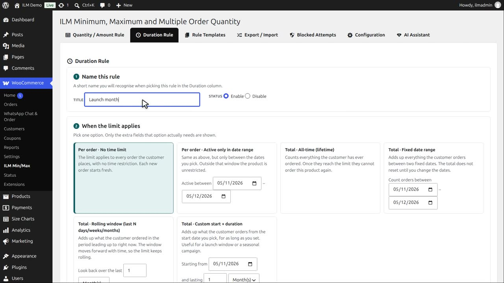
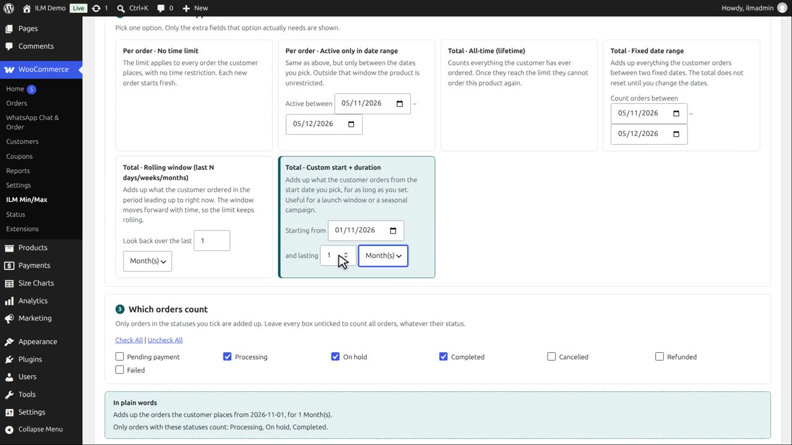
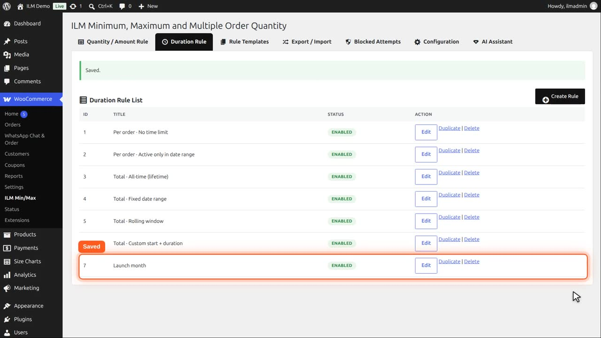
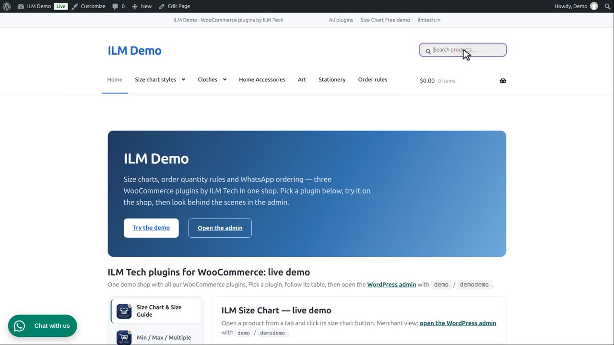

Pro add-on. This feature needs the Pro add-on. See Free and Pro.
| Type | Meaning |
|---|---|
| Total · Custom start + duration | Adds up what the customer orders starting from a date you pick, for as long as you set — useful for a launch window or a seasonal campaign. |
Create a duration rule named Launch month.

Pick Total, custom start plus duration. Start on November first, and last one month.

Save it.

Give it to the Mountain fox cushion, maximum three.

Demo bought two in October, before the start, and one this month. Only this month’s order counts, so two are left. Before the start date and after the month ends, the rule does not apply.